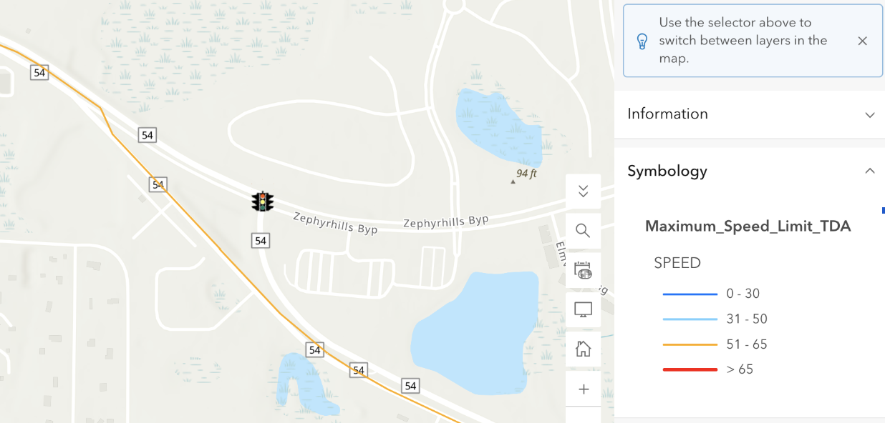
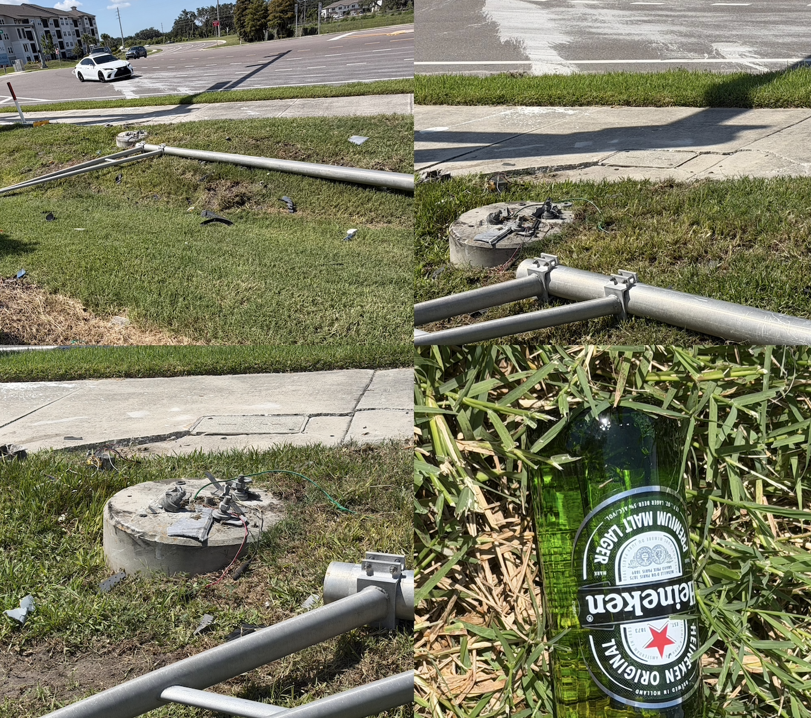
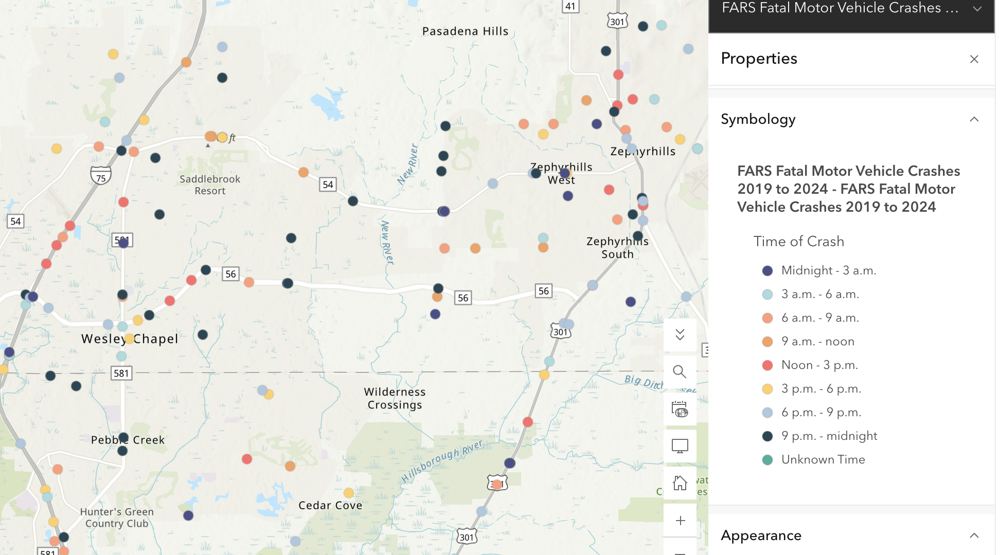
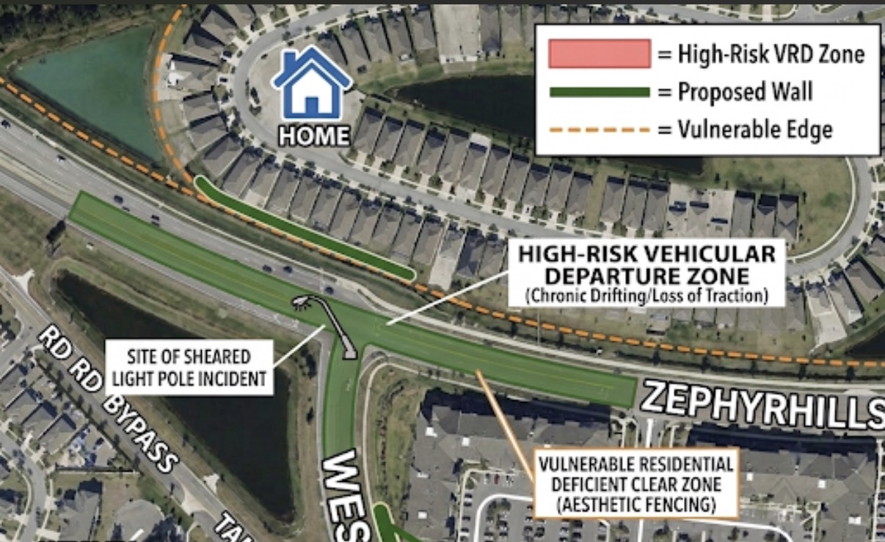
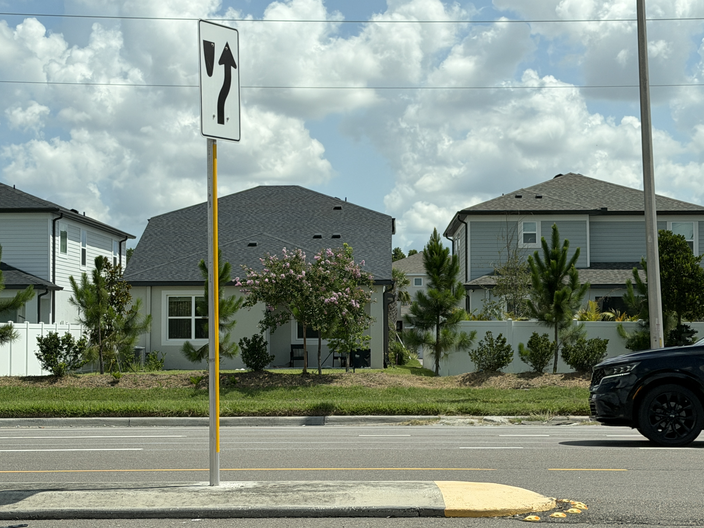
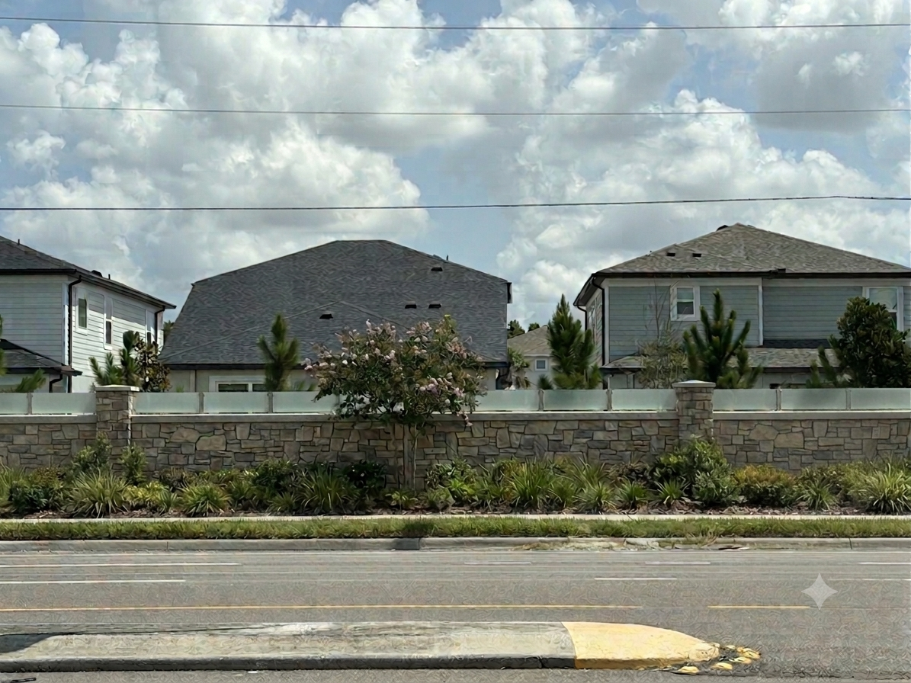

Project Proposal
Perimeter Safety and Traffic Mitigation Barrier
The Residents and Property Owners of Pendleton at Chapel Crossings
June 2026
📄 View PDF Document VersionI. Overview
Objective
To secure immediate municipal and developer funding for the engineering, surveying, and construction of an FDOT-compliant, steel-reinforced precast concrete crash barrier along the Chapel Crossings residential perimeter bordering County Road 54 / State Road 54 (SR 54).
The Hazard & Clear Zone Deficiency
State Road 54 is one of the most critical and heavily trafficked east-west arterials in the Tampa Bay region. Long-range projections indicate traffic volumes on this corridor could reach 98,000 vehicles per day, causing massive capacity strains. Residential properties on Pendleton Landing Circle have been platted in immediate proximity to a sharp horizontal curve on SR 54.
Speed limits headed east in the range of 51-65 mph posted as a map layer by the Florida Department of Transportation and maintained by the Transportation Data & Analytics office (TDA) as of 6/27/2026.
Due to excessive vehicular velocity, inadequate traffic calming, and a deficient "Clear Zone"—defined by FDOT as the unobstructed, traversable roadside area that allows a driver to regain control of a vehicle—this curve is a chronic site for Vehicular Roadway Departure (VRD) events. Under FDOT FDM 215, facilities with design speeds of 45 to 55 mph demand strict New Construction Clear Zone widths ranging from 24 to 30 feet. In the image below, you can see there is insufficient space as well as no wall or barrier.

File: clear_zone_deficiency.pngII. Empirical Evidence & Liability
The Catalyst & Liability Escalation
The urgency of this petition is underscored by a recent, catastrophic Right-of-Way (ROW) breach where an errant vehicle sheared a light pole and propelled debris into a residential yard. There was also evidence of an alcoholic beverage that may indicate either a drunk driver or from construction work.
By platting and selling lots with backyards completely exposed to the outside radius of a known high-speed curve, the CDD has actively created a "Foreseeable Zone of Risk". Under the landmark Florida Supreme Court case McCain v. Florida Power Corp., this conduct legally generates a duty of care to lessen the risk and protect others from harm. The lack of barrier currently in place possesses zero structural kinetic capacity to arrest a 4,000-pound vehicle traveling at 45 mph, representing a direct breach of this legal duty. Should the developer attempt to deflect liability to homeowners using the "Slavin Doctrine" (arguing the danger was obvious upon purchase), the residents maintain that the complete structural failure of a barrier constitutes a highly technical, hidden "latent defect" in the community's master safety design.

File: sheared_light_pole_damage.pngCommunity’s Calling
Recent discourse within the Wesley Chapel Community Facebook group reveals a mounting consensus among local residents regarding a significant increase in reckless and aggressive driving in the area. Many community members have taken to the platform to document their daily frustrations, noting that these behaviors are putting both new and experienced drivers at risk. The overarching sentiment is one of bewilderment at the declining quality of road safety, with one resident expressing, "I'm lost have people forgotten how to drive? I've never seen so much bad driving as I have the last 2 days." Another member bluntly asserted that "people need to go back to driving school," observing that many motorists "drive to reckless and clearly don't understand the laws of the roads."
Specific anecdotes shared within the group highlight highly dangerous, impatient maneuvers that routinely endanger the public. For example, one resident recounted a startling incident where their vehicle was safely and legally entering a left-turn lane, only to have the driver behind them "go around us on a single-lane road, driving over the yellow lines just to beat us into the turn lane." Other locals have pointed out the illogical nature of this pervasive impatience. One commuter questioned why motorists are constantly "in a hurry to get to the red light," noting that people frequently "rush around get in front of someone to slam on the brakes," a practice that "makes absolutely no sense" and disrupts the flow of traffic for everyone.
Furthermore, community members who drive frequently for work have observed a general "lack of awareness" on local routes, with specific hazardous incidents being reported on major thoroughfares like Wesley Chapel Boulevard near the Stagecoach neighborhood, as well as in close proximity to local schools like Cypress Creek Middle School. Ultimately, these firsthand accounts aggregated from the Wesley Chapel Community page paint a clear picture of a neighborhood increasingly alarmed by hazardous road conditions and collectively calling for an immediate return to basic traffic safety and mutual respect on the roads.
 File:
File: Description: A December 2025 post from the Chapel Crossings Residents Facebook group documenting a vehicle that failed to negotiate the turn, stopping dangerously close to residential backyards and explicitly highlighting the community's frustration over the lack of a protective wall.
High Injury Network (HIN) & Video Evidence
Between 2019 and 2023, Pasco County recorded over 50,000 total crashes, resulting in 472 fatal crashes (Pasco County MPO, Long Range Transportation Plan). Consequently, SR 54 is explicitly identified as a primary corridor on the county's High Injury Network alongside US 19 and US 301 (Pasco County, Safety Action Plan). The recent light pole shearing is not an isolated anomaly; it is a statistical inevitability validated by this data.
Over the past year, Wesley Chapel has experienced a concerning series of severe traffic incidents, accidents, and roadway emergencies that have heavily impacted the growing Pasco County community. Just days ago, on June 27, 2026, a massive collision shut down Interstate 75 Northbound near mile marker 280 for hours when a semi-truck hauling an oversized evaporator tank attempted a lane change, causing the rear trailer to detach and completely crush a passenger SUV; miraculously, the two women inside escaped with only minor injuries.
This major highway disruption followed a tragic fatal hit-and-run earlier in the month at the intersection of Handcart Road and Old Bridge Road, where a 70-year-old Wesley Chapel resident was arrested after turning his vehicle into the path of a motorcycle, resulting in the death of a 31-year-old rider. The community's residential areas have also seen profound heartbreak, including the devastating loss of a 12-year-old middle school student who was killed while riding an electric skateboard in the Crosswinds neighborhood, as well as an 87-year-old man who died after his Tesla, operating in autopilot mode, struck an electrical box and sank into a local pond. Beyond vehicular crashes—which continue to cause major roadblocks at busy intersections like State Road 56 and Wiregrass Ranch Boulevard, County Line Road and Mansfield Boulevard, and a recent collision at Ancient Oaks Boulevard and Ashley Oaks Circle—the area also responded to a shocking small plane crash and explosion within a residential subdivision, underscoring a highly chaotic and tragic year for local emergency responders and commuters alike.
Geographic Crash Verification
This image shows the recent accidents near our neighborhood in the past year.

File: recent_accidents_map.pngIII. Regulatory Deficiencies & Structural Analysis
The petition avoids the regulatory trap of requesting a "noise wall" under FDM 264, as FDOT's "Date of Public Knowledge" rules legally absolve the state from providing retroactive acoustic mitigation to newer communities. Instead, this structure is mandated as a Roadway Departure Crash Barrier necessitated by direct safety violations.
FDOT Control Zone Violations
FDOT defines "Control Zones" as high-risk areas with a significantly greater frequency of roadway departures, including the outside radius of horizontal curves and locations where an aboveground object has been struck three or more times in five years. Because Chapel Crossings borders a sharp curve and now has a history of hazard strikes, this segment legally qualifies as a Control Zone. FDOT regulations dictate that any roadside hazard within a Control Zone failing to meet full clear zone criteria MUST be shielded by a crash-tested structural barrier.
Pasco County Land Development Code (LDC) Violations
Standard, unreinforced PVC or wood fencing violates the aesthetic and safety buffering requirements mandated for Master Planned Unit Development (MPUD) approvals.
| Pasco County LDC Section | Regulatory Requirement | Application to Chapel Crossings | Status |
|---|---|---|---|
| Section 500 (Zoning) | 100-foot minimum setback from external road rights-of-way for MPUDs. | If lots are closer than 100 feet to SR 54, a variance was required, establishing developer assumption of proximity risk. | VIOLATION |
| Section 905 (Subdivisions) | Double frontage lots along arterials must be heavily buffered. | Backyards facing SR 54 require continuous structural buffering, not standard privacy fencing. | VIOLATION |
| Section 1003 (Fences/Walls) | Exceptions to 4-foot fence limits are granted for continuous buffer walls along arterials. | Standard unreinforced fencing violates the intent of structural arterial buffering. | VIOLATION |
Structural Vulnerability & Kinetic Energy Analysis
To objectively prove the inadequacy of the current perimeter fencing, we evaluate the physics of a VRD using standard kinetic energy modeling. The current unreinforced fencing installed by the developer is merely an aesthetic boundary.
We model the kinetic energy (KE) of a standard mid-size SUV (mass m = 1800 kg) departing the roadway at the posted or frequently traveled speeds along SR 54.
Scenario A: Impact at 45 mph (20.11 m/s)
KE = ½ (1800 kg)(20.11 m/s)2
≈ 363,970 Joules
Scenario B: Impact at 65 mph (29.05 m/s)
KE = ½ (1800 kg)(29.05 m/s)2
≈ 759,514 Joules
Conclusion of Structural Forces
A standard residential vinyl or wood privacy fence is instantly pulverized by localized forces exceeding 300,000 Joules, allowing the vehicle to carry its remaining kinetic energy directly into a residential dwelling or populated backyard.
Only a continuous, steel-reinforced, precast concrete barrier can successfully dissipate this kinetic energy and safely redirect an out-of-control vehicle. Note: A rigid safety barrier compliant with FDM 215 will subsequently provide massive acoustic noise reduction as a secondary physical byproduct.
IV. Proposed Multi-Agency Action Plan
The residents of Chapel Crossings propose a bifurcated approach to immediately mitigate the safety threat while a permanent infrastructure solution is developed.
Phase 1: Immediate Traffic Calming & Data Acquisition
- Deployment of permanent or semi-permanent radar speed trailers at the approach to the Chapel Crossings curve.
- Deployment of a decoy sheriff’s vehicle at the intersection. I have reached out with the sheriff’s department and filed a complaint earlier this year for the noise of reckless driving in the area to no response.
- Initiation of highly specific Florida Sunshine Law public records requests to acquire actionable data:
- To FDOT District 7 (Traffic Operations): Requesting site-specific crash reports, collision diagrams, and Roadway Departure logs for this segment of SR 54.
- To FDOT District 7 (Design Office): Requesting approved Design Variations/Exceptions regarding Clear Zone criteria for the FPID 416561-2-52-01 widening project.
- To Pasco County Planning: Requesting all MPUD setback variances granted to the CDD that permitted a reduction of the 100-foot buffer.
Phase 2: Permanent Infrastructure Remediation
Joint funding and engineering surveying for a structural roadway departure crash barrier.
We formally request that the Chapel Crossings POA/ Community Development District (CDD) collaborate with Pasco County to navigate the Land Development Code permitting process to replace the current lack of barrier with a load-bearing protective wall that addresses the latent safety defects inherent in the community's current design.

File: proposed_barrier_blueprint.pngImmediate Action Required
A structural perimeter barrier is not an aesthetic request; it is a mathematical and legal necessity. Protect our community from an inevitable tragedy. Join the coalition and support the barrier proposal today.

File: image.png
File: image2.png